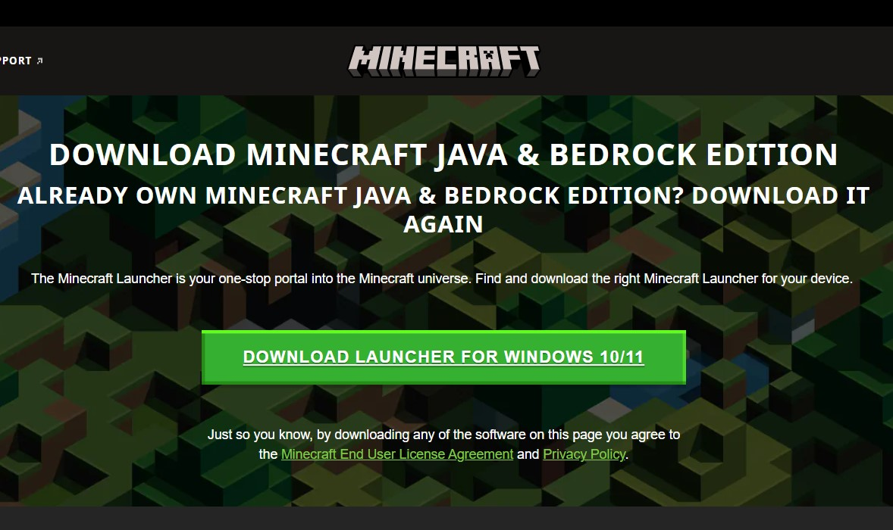

Uvedení
Věřím, že jste o hře jménem "Minecraft" už něco slyšeli. Pokud ale ne, tak nevadí! (Ne, nemá to nic společného s "Mein kampfem", jak si někdo může myslet).
Tak tedy pro ty, co Minecraft vůbec neznají, nebo o něm slyšeli jen matně, tu mám "stručný" popis:
Minecraft je placená, sandboxová hra, vytvořena roku 2009 Markusem Notchem a oficiálně vydána roku 2010. Momentálně ji ale vlastní Microsoft. V této hře hrajete za svou postavu a snažíte se přežít. Celá hra se odehrává v téměř nekonečném světě sestaveném z bloků (krychlí). Hráč s těmito bloky může interagovat, ničit je a pokládat. Dál tu máme také zvířata (také z krychlí a kvádrů), která můžete zabíjet, rozmnožovat je nebo z nich dostávat suroviny. V této hře jsou ale i záporné postavy, jako třeba zombie, skeletoni (kostlivci) a mnoho dalšího. Samozřejmě jsou tu i bossové. Hlavní z nich je Ender dragon, který žije v dimenzi jménem "End" (dimenze konce). Toho když zabijete, tak hru prakticky vyhrajete, ale hrát můžete i nadále, a že je i potom stále co objevovat, protože tu jsou hned tři další bossové k poražení.
To rozhodně není vše. Minecraft je momentálně obrovská hra s mnoha herními mechanikami a možnostmi. Od roku 2010 se extrémě rozrostl, ale jeho optimalizace za moc nestojí. I když má Minecraft oproti jiným hrám grafiku velice primitivní, tak počítač musí dělat mnoho úloh velice rychle a dokáže to jenom na JEDNOM JÁDRU PROCESORU! Samozřejmě že je pak každá nová verze s přidanými bloky a složitějšímu generování terénu stále náročnější. Thizar běží na verzi 1.20.1, což je relativně nová, a proto i dost náročná verze.
Minecraft je také velmi dobrý v tom, že jde velice jednoduše modifikovat. Člověk si v něm může měnit textury, přidávad módy (přídavek do hry) a tak dále. Takový mód si může v podstatě vytvořit skoro každý, takže existuje obrovská škála módů, od různých lidí. Hlavní ale je, že jediné co si stačí koupit je samotný Minecraft. Většina módů je zadarmo. Ale aby jste mohli tyto módy používat a kombinovat, potřebujete na to modloadery jako je Forge nebo Fabric. My využíváme Forge. Minecraft ale nebyl udělaný pro modifikování, proto je docela těžké vůbec nějaké přidat a mnoho lidí neví jak to udělat. To je důvod, proč vznikl tento návod.
Co musíte mít
Protože Thizar běží na "Java" verzi (Je jich mnoho. Třeba "Pocket" verze pro telefony) bude potřeba počítač. Tím nemyslím žádnou bramboru z roku 1950, ale nějaký relativně novější notebook nebo stolní počítač. Samozřejmě stolní počítač bude lepší. Další věc, co budete potřebovat je operační systém (nečekaně). Tento návod se bude zaměřovat hlavně na Windows 10, ale na Mac OS je to podobné. A nakonec bude potřeba samotný Minecraft. Pokud ale nechcete dávat peníze do videohry, tak je tu i možnost, jak Minecraft stáhnout zadarmo. Ale to až později.
Jak získat Minecraft
V případě, že Minecraft Java verzi nemáte, tu máme stručný návod, jak si jej zakoupit.
Nejdříve musíte jít na oficiální web Minecraftu. (Upozorňuji, že je potřeba mít Microsoft účet)
Pokud Minecraft nemáte zakoupený, tak zmáčkněte "buy Minecraft" a dále postupujte podle pokynů. Pokud jej zakoupený máte, tak stiskněte "Download launcher for [Váš operační systém]".

Pokud tedy Minecraft už máte a stáhl se vám "MinecraftInstaller.exe", tak jej nainstalujte, přihlašte se v něm a máte Minecraft!
Jak nainstalovat módy
Myslím, že většina z vás tu část nahoře dobře zná, ale jak nainstalovat módy už moc lidí neví. Je mnoho způsobů, jak je nainstalovat, my se ale zaměříme na ten nejjednodušší. Protože Thizar využívá Forge modloader a ne Fabric, tak budeme nejdříve instalovat samotný Forge. Forge není modloaderem jenom pro Minecraft, ale i pro řadu jiných her, je velice populární a má svoji vlastní aplikaci, která nám ulehčí práci. Musíte si ji tedy nainstalovat. (Aby to fungovalo, musíte mít Minecraft zakoupený a musíte jej alespoň jednou spustit.)
Jakmile se dostanete na jejich stránku, tak si najděte verzi "standalone" pro váš operační systém a stáhněte si ji.
Po tom co se vám stáhne, ji otevřete.
Vyberte si jazyk a dejte next.
Potvrďte kolonku dole a dejte next.
Dejte accept & install a počkejte.
Dále se nějak dostaňte přes intro, najděte Minecraft a klikněte na něj.
Abyste se mohli připojit na náš server, musíte mít ty stejné módy, které tam máme my. Stáhněte si tedy náš modpack zde.
Následně se tedy přesuňte zase do aplikace a vpravo nahoře dejte "Create custom profile".
V něm následně dejte "inport" a nejděte předtím stažený modpack .zip a dejte otevřít. Počkejte, až se vám v aplikaci objeví nová instance.
Poté instanci rozklikněte a dejte play. Otevře se vám Minecraft launcher. V tom dejte také play (hrát) a počkejte, až se vám hra nečte. Pokud by to nefungovalo, tak mi napište na Discord a já vám poradím.
Jak se tedy dostat na server
Pokud uvidíte toto GUI, tak jste nadšení, protože se vám povedlo spustit Minecraft s módy! Už si můžete jít do singleplayeru, vytvořit si svět a začít tam něco budovat, ale abyste se dostali na náš server, musíte kliknout na multiplayer. Teď vám to řekne, aby jste si nastavili heslo. To je tam proto, aby se za vás na server nepřipojil nikdo jiný a nehrál za vás. Jakmile si heslo nastavíte, ještě se vás to zeptá na jedno další potvrzení a dostanete se do seznamu uložených serverů. Pro přidání serveru musíte kliknou na "Add server" (Přidat server).
Tady si nastavíte, jak chcete, aby se u vás jmenoval a do druhého pole dáte IP adresu, kterou najdete na našem Discord serveru (Nechci ji dávat sem kvůli možným útokům DDOS a připojování náhodných lidí na server). Nakonec dáte "done".
Server by se vám tam měl ukázat a po kliknutí na "Join server" (Připojit se na server) jste tam!